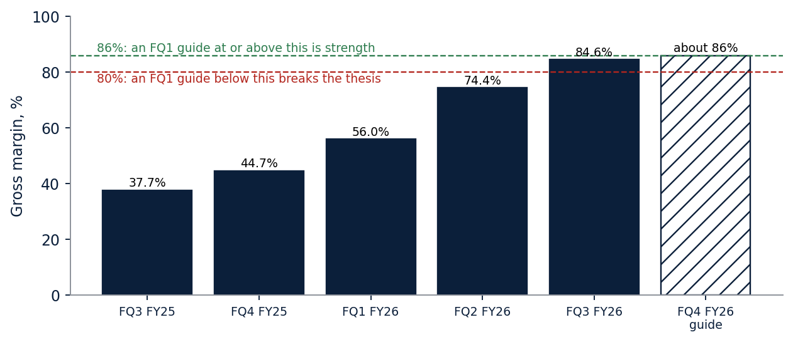
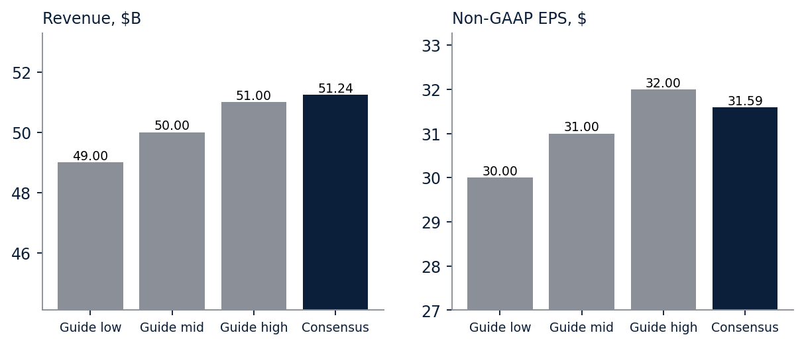
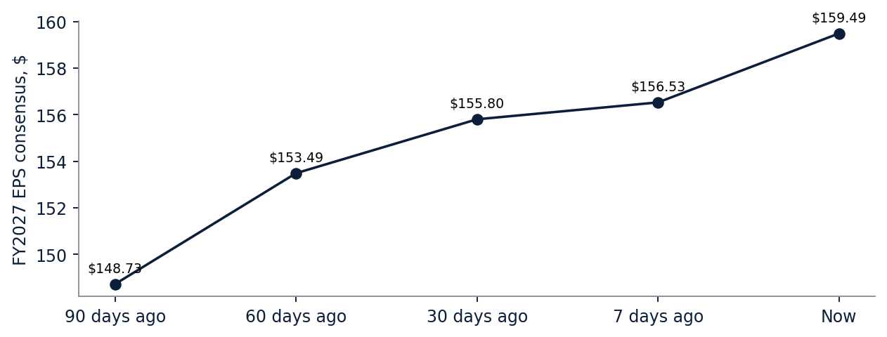
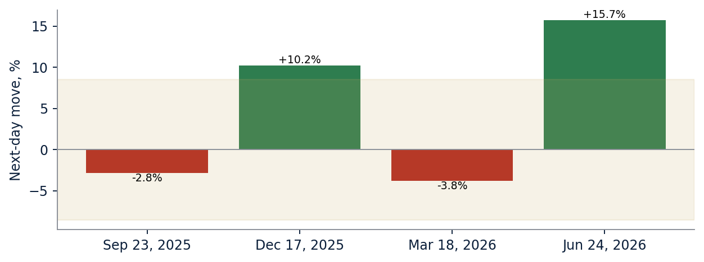

Earnings preview · Memory · Micron FQ4 · Coverage resumed
Micron reports Wednesday. The margin guide decides our view.
Micron reports fiscal fourth-quarter results on Wednesday, September 30, after the close.[1] This note resumes our coverage, which we closed on July 30.[9] It sets the tests before the print and carries no rating or target; both come in our update by Friday, October 2. The quarter itself is largely known: the company guided to $50.0 billion of revenue, and consensus sits at $51.24 billion. What decides our view is the next quarter’s gross-margin guide. A guide at or above this quarter’s roughly 86% keeps our thesis intact. A guide below 80% breaks it.
One-page summary
| Item | Status |
|---|---|
| Rating | Not rated. Coverage resumes with this note. The rating and a 12-18 month target come in our update by October 2. |
| Price | $1,082.28, September 25 close |
| FQ4 guide, issued June 24 | Revenue $50.0B ± $1.0B; gross margin about 86%; non-GAAP EPS $31.00 ± $1.00[2] |
| FQ4 consensus | Revenue $51.24B; EPS $31.59[4] |
| FY2027 EPS consensus | $159.49, against $148.73 ninety days ago[4] |
| Options-implied move | ±8.5% through the October 2 expiry[5] |
| Report | Wednesday, September 30, after the close; call at 4:30 p.m. ET[1] |
Why we are resuming coverage now
When we closed single-name coverage on July 30, we named four conditions for coming back.[9] One of them is this report, so we are resuming with the tests and holding the rating until the results are in. Where each condition stands:
| Condition set on July 30 | Where it stands |
|---|---|
| HBM4 re-qualified at scale | Not shown in a reported number. Micron announced high-volume HBM4 production for NVIDIA’s Vera Rubin in March, and its cumulative HBM4 revenue passed $1 billion by June, but it does not disclose its share.[10][11] |
| A fourth-quarter beat on realized prices | Wednesday’s report decides it. |
| A washout to the 200-day average, then in the mid-$500s | Did not happen. The lowest close since July 30 was $823.03 on July 31. On September 25 the stock closed 64% above its 200-day average of $661.10.[6] |
| A full underwrite of Chinese supply after CXMT’s listing | Not done yet. It is part of the rating work after the report. |
The tests we set before the print
We publish these before the report so the result can be graded against them afterward.
| Test | The line | If it passes | If it fails |
|---|---|---|---|
| FQ4 revenue | At or above $50.0B, the midpoint of the guide | The quarter confirms the pricing run | The target is built on a lower base |
| FQ1 gross-margin guide | About 86% or better is strength; below 80% breaks the thesis | The thesis holds, and the target builds on the new base | Below 80%: the thesis is broken, and the update will not start from a positive rating |
| DRAM pricing | Sequential price growth in the FQ1 guide and commentary | The contracted upcycle is intact | A sequential DRAM price decline breaks the thesis |
We are also watching the customer agreements. Micron says 14 of its 16 long-term agreements carry about $100 billion of revenue at minimum prices, and it expects $22 billion of customer deposits and commitments.[3][11] Any termination or shrinking of that floor matters more than one quarter’s beat.
Chart 1. The margin line we are grading against
Gross margin went from 37.7% to 84.6% in four quarters. The next guide is the test.

GAAP gross margin from Micron’s Forms 10-Q and 10-K on SEC EDGAR; the fourth quarter is the full year less the first nine months.[12] The hatched bar is Micron’s fourth-quarter guide of about 86%, a non-GAAP figure; in the third quarter the non-GAAP margin was 84.9% against 84.6% GAAP.[2]
What the price already assumes
Our thesis is that long-term contracts extend this upcycle further than a peak multiple implies, and that the same contracts cap part of the upside. At $1,082.28, Micron trades at 6.8 times the Street’s fiscal 2027 estimate of $159.49.[4] In our view, that is a peak-cycle multiple on peak-cycle earnings: the market is paying for about half of those earnings to last. The options market is pricing a move of about ±8.5% through the October 2 expiry.[5] After the last four reports, the next-day moves were −2.8%, +10.2%, −3.8% and +15.7%.[6]
Chart 2. Consensus already sits above the guide
The Street expects Micron to beat its own revenue range.

Company guidance from the June 24 release; consensus from Yahoo Finance, retrieved September 26, 2026.[2][4]
Chart 3. Estimates kept rising into the print
FY2027 consensus moved from $148.73 to $159.49 in ninety days.

Yahoo Finance EPS trend for fiscal 2027, retrieved September 26, 2026.[4]
Chart 4. Past reactions against the implied move
The shaded band is what options price for this report.

Next-day moves from Yahoo Finance daily closes; the band is the at-the-money straddle at the $1,080 strike for the October 2 expiry, retrieved September 26, 2026.[5][6]
How we will set the rating
Our update by October 2 will carry a rating and a 12-18 month target. The target will be a probability-weighted value across bull, base and bear cases, each priced as a multiple of fiscal 2027 earnings, with every range following from its stated inputs and the arithmetic shown. The multiple will be anchored three ways: Micron’s own history, its memory peers, and the rate regime. We are waiting for the report because the FQ1 guide sets the fiscal 2027 base, and a target set before it would rest on the number most likely to move.
What would change our view
Up: an FQ1 gross-margin guide at or above about 86% with DRAM prices still rising, and fiscal 2027 estimates moving higher from here.
Down: an FQ1 gross-margin guide below 80%, a sequential DRAM price decline, revenue below $50.0 billion, or a ruling against Micron in the Netlist patent case at the International Trade Commission, which instituted the investigation on September 23.[7]
Risks
- The cycle turns. In our view, memory stocks tend to peak before earnings do.
- New supply from China’s CXMT and Korean capital spending.
- High-bandwidth memory share: Micron does not disclose its HBM4 share, and it competes with SK Hynix and Samsung for the same customers.
- Rates: the Fed raised its target range to 3.75-4.00% on September 16, and higher rates weigh on the multiple.[8]
Sources
- Micron, “Micron Technology to Report Fiscal Fourth Quarter Results on September 30, 2026,” August 26, 2026.
- Micron fiscal third-quarter 2026 results, Form 8-K Exhibit 99.1, June 24, 2026.
- Micron Form 10-Q for the quarter ended May 28, 2026.
- Yahoo Finance, Micron analyst estimates, retrieved September 26, 2026.
- Yahoo Finance, Micron options chain, October 2 expiry, retrieved September 26, 2026.
- Yahoo Finance, Micron daily prices through September 25, 2026.
- U.S. International Trade Commission, institution of Investigation No. 337-TA-1523, September 23, 2026.
- Federal Reserve, FOMC statement, September 16, 2026.
- bpleon research, Micron coverage closing note, July 30, 2026.
- Micron, “Micron in High-Volume Production of HBM4 Designed for NVIDIA Vera Rubin, PCIe Gen6 SSD and SOCAMM2,” March 16, 2026.
- Micron, fiscal third-quarter 2026 earnings call prepared remarks, June 24, 2026.
- Micron Forms 10-Q and 10-K, SEC EDGAR (XBRL financial data); the fourth quarter is the full year less the first nine months.
- Micron, “Micron and Anthropic Announce Strategic Agreement to Scale Next-Generation AI Infrastructure,” June 22, 2026.
Disclosures. This note is research and opinion, published to all readers alike. It is not investment advice for any person. The author holds a long position in Micron, held continuously since before our July 30 note (see the correction on that note), and a long position in a memory-sector ETF (DRAM) with a call option written against it. bpleon research received no compensation from Micron. AI tools helped draft this note and compute figures; a person checked the load-bearing numbers against their sources before publication. The AI is Claude, made by Anthropic. Micron has disclosed a strategic investment in Anthropic and a memory and storage supply agreement with it.[13] This commentary is for informational and educational purposes only and does not constitute investment, tax, or legal advice. See the disclaimer. Version 1.0.